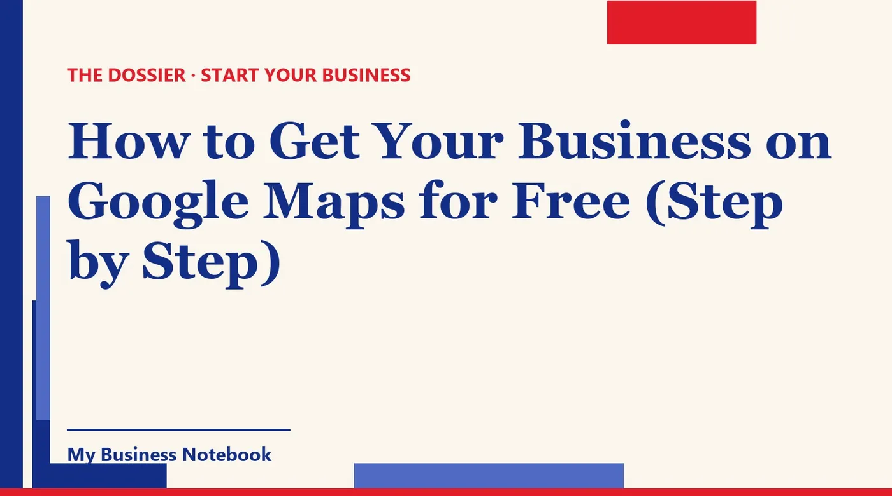

How to Get Your Business on Google Maps for Free (Step by Step)
Someone two blocks away just typed "bike repair near me." If your shop isn't on Google Maps, you don't exist for them. The good news: getting on Google Maps is free, and it takes one afternoon plus a verification step. Here's exactly how to do it, including the parts that trip people up: verification, home-based businesses, review links, suspensions and those "Google" sales calls.

The short answer
Yes, you can get your business on Google Maps for free. You create (or claim) a Google Business Profile at business.google.com/add, verify that you really run the business, and your pin can then show up on Maps and in Google Search.
The profile costs nothing. What takes effort is getting the details right: an eligible address, the real business name, the right category and a verification method that goes through the first time. That's what this guide walks through, step by step.
How do I get my business on Google Maps for free?
Google says it in one line: you can add or claim your business "at no charge." There's no paid tier needed to appear on Maps. Ads are a separate product you can ignore when you start.
Step 1: check that a profile doesn't already exist
Search your business name and city on Google Maps before anything else. Google sometimes builds a listing from public data, and creating a second one leads to duplicates. If your business shows up unclaimed, open it and select "Claim this business," then "Manage now."
If the listing is already verified by someone else (a former partner, an old web agency), Google lets you request ownership from the current owner, as long as you're authorized to manage the business.
Step 2: create the profile
- Go to business.google.com/add and sign in with a Google Account you'll keep. Use a business email if you have one, not a staff member's personal account.
- Enter your business name exactly as customers see it on your sign, your truck or your invoices.
- Choose your primary category (more on that below).
- Say whether customers visit you, whether you go to them, or both. This decides whether your address is shown.
- Add your phone number and website, if you have one. A website isn't required to get listed.
Step 3: verify, then fill everything in
Your profile won't be fully live until it's verified. Once it is, complete every field: hours, holiday hours, a plain description of what you do, and real photos of your storefront, your work and your team. An empty profile rarely gets picked over a complete one next door.
How to get my business account verified on Google
Google picks the verification methods it offers you, based on your business type and location. You can't always choose. According to Google, the options include:
- Phone or text: you get a code and enter it on your profile.
- Email: you follow the instructions sent to you.
- Live video call: a Google representative checks your location and ownership with you, during business hours.
- Postcard: Google says most codes arrive within 14 days, and the code expires after 30 days.
Google also says verification reviews take up to 5 business days. So start the process before opening day if you can.
What to show on a video verification
Video is where many owners get stuck. Google asks to see your location (signs or nearby landmarks), your products or branded equipment, and proof that you manage the place, like keys to a staff area or access to the cash register.
Plan the shot before you press record. Walk from the street to your door, show the sign, then open something only an owner can open. For a contractor with no storefront, show your branded vehicle and your tools.
If verification fails
The "Get verified" button reappears on your profile. You can then try another method, or follow the "Review issues" instructions if a video was rejected. Don't create a brand new profile to get around it: that's how businesses end up with duplicates and suspensions.
No storefront? Service-area and home-based businesses
You can be on Google Maps without a shop. Google's rule is simple: a business qualifies if it has a location customers can visit, or if it travels to customers where they are.
If you run a plumbing, cleaning or mobile grooming business from home, Google says to remove your address from the profile when you don't serve customers there. Your home address stays private, and you list the areas you cover instead.
- Up to 20 service areas, set as cities, ZIP codes or other areas.
- Your overall area shouldn't stretch beyond about 2 hours of driving time from where you're based.
- If you have a shop and make deliveries or house calls, you can show your address and add service areas too.
Google notes that service area edits can take up to 48 hours to appear. And a few business types (those that need age checks, like alcohol or cannabis) can't be service-area only.
Online-only business with no customer contact in person? Google's guidelines don't make it eligible for a Business Profile. Focus on your website and search instead.
Name, address and category: the details that matter
Most listing problems come from three fields. Get them right on day one and you avoid most of the headaches later.
Your business name
Use your real-world name, nothing more. Google's guidelines forbid adding taglines, keywords, phone numbers or URLs, and warn that extra information in the name "could result in the suspension" of your profile. "Riverside Plumbing" is fine. "Riverside Plumbing Best 24/7 Emergency Plumber Austin" is not.
Your address
It has to be a real place. Google says P.O. boxes and mailboxes at remote locations aren't acceptable, and virtual offices don't qualify. A coworking space only works if you have permanent signage, receive customers there during your hours and have staff on site.
Your categories
Pick as few as you need. Google's advice: choose categories "as specific as possible, but representative of your main business," describing what you are, not everything you have. A pizza place is a "Pizza restaurant," not also an "ATM" because there's one in the corner.
How to get my business Google review link and QR code
Once your profile is verified, Google gives you a ready-made link and QR code that open the review form directly. Here's where to find them.
- Open your Business Profile and select Read reviews, then Get more reviews.
- To grab the link, select Copy.
- To save the QR code, right-click it and choose "Save image as."
One catch: Google says review QR codes can only be generated in a computer browser, not on a phone. Put the link in your thank-you emails and on receipts. Print the QR code for your counter or the back of your business card.
What you can and can't do to get reviews
Ask every happy customer, in person, right after a good job. That's it. Google strictly prohibits offering anything (a discount, a freebie) in exchange for a review, and treats it as fake content.
Federal law is also clear on the worst practices. The FTC's rule on consumer reviews, in effect since October 21, 2024, bans fake reviews and incentives tied to a positive (or negative) opinion, and lets courts impose civil penalties for knowing violations. Buying reviews breaks both Google's rules and the FTC's.
What gets a listing suspended (and how to appeal)
Google can suspend a profile that breaks its guidelines. The usual reasons are the ones above: keywords stuffed in the name, a virtual office or P.O. box as address, a home address shown when customers never visit, or duplicate profiles for the same business.
If it happens, don't panic and don't start over. Google's appeals tool lets you pick the suspended profile, see the reason, and submit an appeal with evidence. A few rules from Google's help center:
- Appeal reviews can take up to 5 business days.
- Once you open the evidence form, you have 60 minutes to submit it.
- Make sure the name and address on your documents match the profile.
- Don't create a new profile for the same business while the appeal is under review.
How much to put my business on Google? (and those calls)
Nothing. The Business Profile is free, and Google says it won't ask you on the phone to sign up for a service, pay money or give personal information. If a caller says your listing is about to disappear unless you pay, hang up.
Google does place some real automated calls, from designated numbers, to check details like your hours. Those calls say they're from Google and why they're calling. Everything else ("we work with Google," "Google partner, final notice") deserves suspicion.
How to get Google My Business to stop calling
In most cases, it isn't Google. Google's own help page suggests registering your number on the National Do Not Call Registry (donotcall.gov or 1-888-382-1222), asking your phone company to block the numbers, and reporting fraud at ReportFraud.ftc.gov.
Don't stop at Google: Apple Maps and Bing Places
Plenty of your customers search on an iPhone, and Apple Maps runs on Apple's own data. Apple Business is free to get started and includes place card customization on Apple Maps: hours, photos, and actions like booking or ordering.
Bing Places for Business is free too, and Microsoft has reworked the import from Google so it keeps your name, hours and contact details. If your Google profile is set up properly, adding Bing takes a few minutes.
Wherever you list, write your name, address and phone number exactly the same way. "Suite 4" on Google, "#4" on Apple and an old cell number on Yelp confuse customers and search engines alike.
Keep every listing right without doing it by hand
A Google profile is the start. Then come Apple, Bing, Yelp, the directories of your trade, and the day you change your hours and have to update all of them. That's where Kaptor helps: it's built for small businesses that want to be found and win their first customers.
Kaptor
Kaptor handles the listing work and the customer hunt from one place:
- Google Business Profile: help to create or claim it, alerts on missing fields, and help asking for and tracking reviews.
- Directories: your business listed on the directories that matter for your country and trade (more than 120 listings), same details everywhere, tracked one by one, with alerts when something goes out of date.
- Prospecting: businesses to contact by trade and area, with contact details, ranked by AI from hottest to coldest, in a pipeline from "to contact" to "won."
- Email: sent from your own address or domain, automatic follow-ups, unsubscribe included, replies in one inbox. Nothing goes out without your approval.
- Website or blog: a generated site with a contact form if you have none, or an SEO blog that points to the site you already have.
You can try it with a free workspace. Paid plans are $89 a month (Starter), $149 (Growth) and $499 (Agency), with no long-term contract.
Where can customers find you today?
Kaptor's free audit searches for your business on the directories in your country and shows where you're listed and where you're missing. No credit card, no sign-up.
Run my free auditKeep going: once your listing is live, follow our 30-day plan to get your new business noticed, from local outreach to your first customers.
FAQ
How do I get my business on Google Maps for free?
Go to business.google.com/add, create your Business Profile (or claim the existing one from Google Maps), then complete verification. Google says you can add or claim your business at no charge.
How long does Google take to verify my business?
Google says verification reviews take up to 5 business days. If you verify by postcard, most codes arrive within 14 days and expire after 30 days.
Can I put my home-based business on Google Maps without showing my address?
Yes, if you travel to your customers. Google says to remove your address when you don't serve customers there, then list up to 20 service areas, within about 2 hours of driving time from your base.
How do I get my business listed on Google Search?
It's the same profile. Once your Business Profile is verified, it can appear both in Google Search and on Google Maps. There's no separate listing to create.
How do I get my Google review QR code?
From a computer browser, open your Business Profile, select Read reviews, then Get more reviews. Copy the link, or right-click the QR code and save it. Google says review QR codes can't be generated on mobile.
How do I get Google My Business to stop calling?
Google says it won't ask you to pay or sign up for a service over the phone. Register your number at donotcall.gov, ask your carrier to block the numbers, and report fraud at ReportFraud.ftc.gov.
Can I pay for Google reviews?
No. Google prohibits incentives for reviews and treats them as fake content, and the FTC's consumer review rule bans fake reviews and incentives tied to a positive opinion.
Official sources
- Google Business Profile Help: Add or claim your Business Profile : the profile is free, steps to add or claim it, requesting ownership.
- Google Business Profile Help: Verify your business : verification methods, postcard and review timelines, video requirements.
- Google Business Profile Help: Service-area businesses : hiding your address, 20 service areas, 2 hours of driving time.
- Google Business Profile Help: Guidelines for representing your business : eligibility, name, address and category rules.
- Google Business Profile Help: Create a link or QR code to request reviews : where to find the review link and QR code.
- Google Business Profile Help: Tips to get more reviews : the ban on review incentives.
- Google Business Profile Help: Appeal profile restrictions : appeal steps and timelines for suspended profiles.
- Google Business Profile Help: Help protect against fraudulent calls : what real Google calls look like, Do Not Call Registry, reporting fraud.
- FTC: Consumer Reviews and Testimonials Rule, Questions and Answers : what the fake reviews rule prohibits, in effect since October 21, 2024.
- Apple Business Support : free to start, includes Apple Maps place card customization.
- Bing Search Blog: Introducing the new Bing Places for Business : free listings and the improved import from Google.
- How to Advertise Your Business Locally for Free in the UK
- Got your ABN? Here's how to get your first customers
- How to Get Your New Business Noticed (Even With No Marketing Budget)
- How to Market a Small Business Locally: A Playbook for Service Trades
- Registered Your Sole Proprietorship? How to Get Your First Customers in Canada
- Sole Trader? How to Get Customers as a New Business
- Sole Trader in Ireland: From CRO Registration to Your First Clients